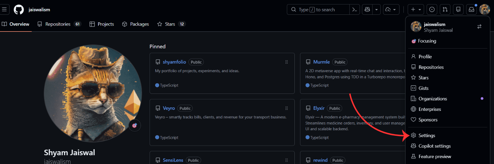
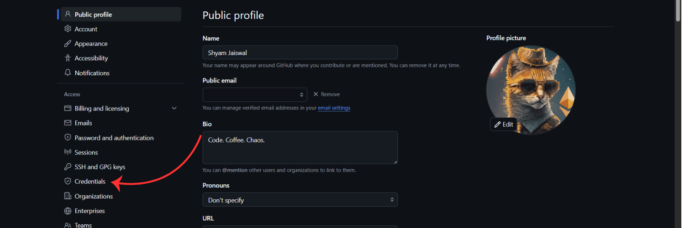
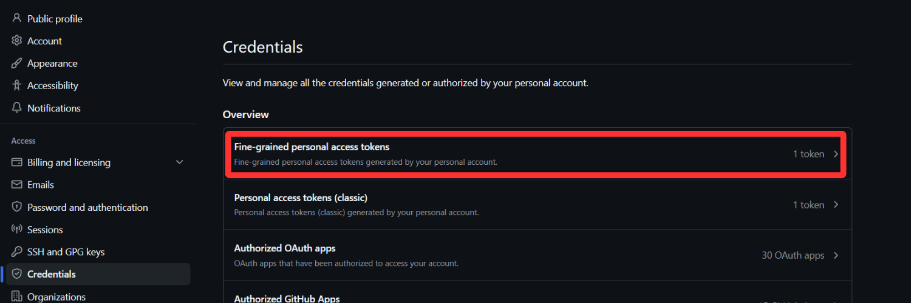

×
How to Configure CommitCode
-
Create a NEW, empty repository specifically for CommitCode (e.g.
leetcode-solutions).
Do NOT point it at an existing personal repo. CommitCode will write files directly into the repo root or configured folders and could clutter or conflict with existing content.
-
Generate a correctly-scoped fine-grained Personal Access Token (PAT):
- Click on your GitHub profile and go to Settings.

- Under access, click Credentials.

- Click on "Fine-grained personal access token".

- Click on "Generate new token".

- Enter a token name, like
commitcode token.
- Under Expiration date, you can set it to no expiration, otherwise after expiry you'll have to manually change it.
- Under Repository access, click "Only select repositories" and then select the newly created repo.

- Under Permissions, click "Add Permissions", and add "Contents".

- Change access of contents from read only to "read and write". Every other permission should stay at "No access".

- Click on Generate token, and copy the token (it can be seen only once).
-
Paste the token in the PAT section below, and write the repo name in the Repository field in the format:
username/repo-name.
-
Click "Test Connection" before saving, then select your sync preferences.
Security Note: Your token is stored locally on your device via chrome.storage.local. It is never transmitted anywhere except directly to GitHub's API. This relies on your OS's disk encryption rather than any custom encryption by CommitCode.